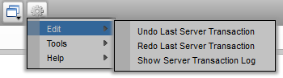

Similar to most software applications, TACTIC provides a convenient way to undo an action. Almost every action in TACTIC is undo able. Transactions can include changes made to the database and to the file system (for example: check-ins). One major benefit with TACTIC transactions is that they are not scoped to just your current session. If you close down Tactic and log in a week later, you can still undo your last transaction.
The Undo action can be found by clicking on the top gear menu and choosing: Edit → Undo Last Server Transaction

To see a list of the transactions which can be undone, click Show Server Transaction Log. (This log contains only those actions completed by the user who is currently logged in.)

Notice the drop down selection menu provides a way to filter the transaction list by time.

To reverse the transactions directly from this log, click Undo to undo the most recent transaction in the log. Continue back through the log, undoing one transaction at a time until the transaction to be undone is reached.
When a transaction is undone, it is relabeled with the type "redo" in the "Type" column. The original action can be performed by clicking on the Redo button.